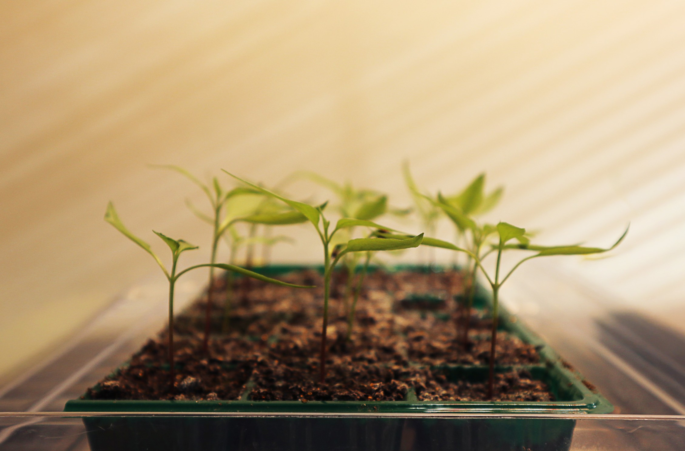
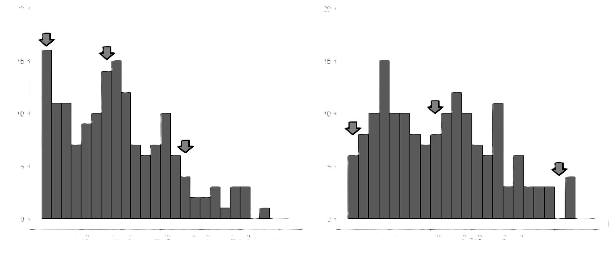
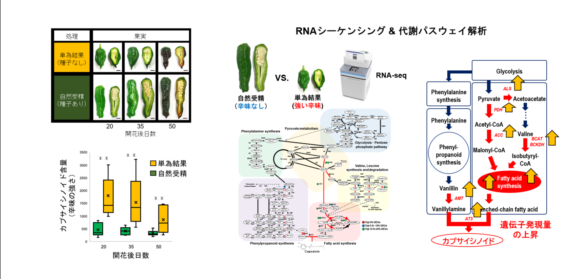
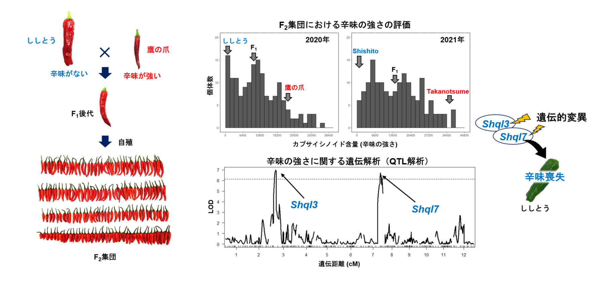
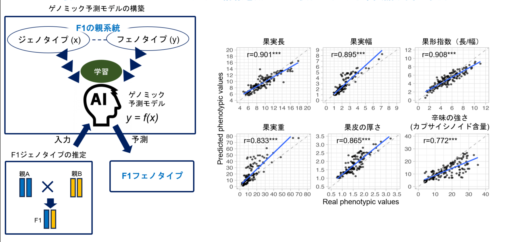
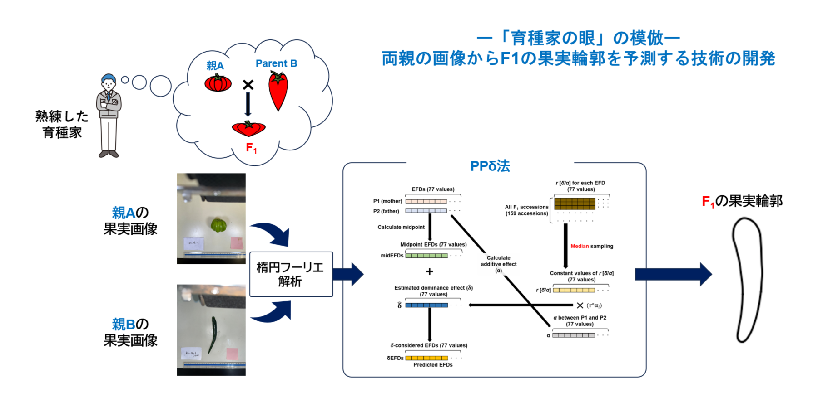

RESEARCH

農業の未来を拓く
知見・技術を創出する
国内外の多様な植物遺伝資源に着目し、圃場栽培試験や現地フィールド調査を通して膨大な遺伝情報（次世代シーケンスデータ）と表現型情報（形態、生理・生長、代謝産物特性等）を収集しています。そして、これらを用いた包括的な情報学的解析により、今後の作物生産・開発に資する新たな知見・技術の創出を行っています。特に現在は園芸作物（主に野菜）におけるストレス耐性等の新たな遺伝的ポテンシャルの発掘とそのメカニズムの解明を進めているほか、情報解析を駆使した新たな品種改良技術や遺伝資源保護技術の開発にも取り組んでいます。
HOW to RESEARCH?
研究手法
サンプリング
大学敷地内の試験圃場や、実際の栽培現場や育種現場から、様々な植物器官を採取します。

データ収集
大学敷地内の試験圃場や、実際の栽培現場や育種現場から、様々な植物器官を採取します。
データ解析
大学敷地内の試験圃場や、実際の栽培現場や育種現場から、様々な植物器官を採取します。
PROJECTS
主な研究プロジェクト
01

‘ししとう’の辛味発生を引き起こす遺伝子発現制御メカニズムの解明
02

‘ししとう’の非辛特性の原因遺伝子座の解明
03

親のフェノタイプ・ジェノタイプ情報を用いたF1後代における果実諸形質の予測
04
